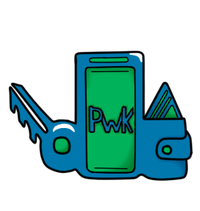

Phone Wallet Keys
Why PWK?
The purpose of PWK was to design and develop a simple utility app that can connect with Bluetooth and, when out of range of that connection, push a notification to the phone alerting the user of their forgotten item. With everything going on in our everyday lives, it's easy to forget an important item when you're rushed out the door to tackle what the day brings. Having a simple app to alert you when you're forgetting something would bring peace of mind to those with a lot on their plates, allowing them to put their focus elsewhere.
PWK’s simplistic design makes it relatively easy and cheap to develop and operate - only requiring the user to have or purchase a Bluetooth device and download the app free from the google play store. From there, the user would only have to pair the device with their phone and set up the initial settings such as a device name and notification alert sound. From there, PWK would do the rest by notifying the user when they have walked out of range of their paired device.
What is Bluetooth?
Bluetooth® is a low-power wireless connectivity technology used to stream audio, transfer data and broadcast information between devices. There are two flavors of Bluetooth technology, Basic Rate/Enhanced Data Rate (BR/EDR) and Low Energy (LE).
Bluetooth, because it can simultaneously transmit both voice and data, has been widely adopted as the technology of choice for devices like hands-free headsets and auto in-dash GPS systems, which can communicate with a cell phone for hands-free calling and downloading real-time mapping data.
Recommended Devices